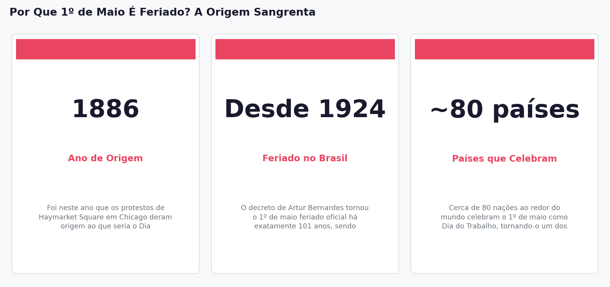

Todo ano, no dia 1º de maio, milhões de brasileiros descansam, fazem churrasco ou viajam — sem necessariamente saber que esse dia livre tem origem em um dos episódios mais violentos da história trabalhista do século XIX. A história começa não no Brasil, mas nas fábricas de Chicago, em 1886, com trabalhadores exaustos, uma bomba e um julgamento que chocou o mundo.
Chicago, 1886: A Faísca que Acendeu o Mundo
Imagine trabalhar 12, 14 ou até 16 horas por dia, seis dias por semana, sem qualquer garantia legal de descanso. Era essa a realidade de milhões de trabalhadores industriais nos Estados Unidos no final do século XIX. Em 1º de maio de 1886, mais de 500 mil trabalhadores foram às ruas de Chicago exigindo uma coisa aparentemente simples: a jornada de 8 horas diárias. Era uma greve geral, organizada pela Federação Americana do Trabalho. Nos dias seguintes, a tensão escalou. No dia 4 de maio, numa praça chamada Haymarket Square, uma bomba explodiu durante um protesto. A polícia respondeu com força, e o saldo foi de mortos e feridos dos dois lados. Líderes sindicais foram presos, julgados de forma controversa e quatro deles foram executados — mesmo sem provas concretas de envolvimento no atentado. A opinião pública internacional ficou indignada. Essa tragédia ficou conhecida como o 'Caso Haymarket'. Em 1889, o Congresso Operário Internacional, reunido em Paris, decidiu transformar o 1º de maio em um dia internacional de luta e homenagem a esses trabalhadores mortos. Era como cravar uma âncora no calendário para que o mundo não esquecesse o preço pago por direitos que hoje consideramos básicos.
No Brasil: De Protesto a Palanque Político
O eco de Chicago chegou ao Brasil rapidamente. Já em 1891, cidades como Rio de Janeiro e Porto Alegre realizavam celebrações do 1º de maio, impulsionadas por grupos de trabalhadores imigrantes europeus e por sindicalistas. Não era um feriado oficial — era um ato político, marcado por manifestações e greves. A grande Greve Geral de 1917, que paralisou São Paulo, ajudou a consolidar a relevância da data no país. Em 1924, o presidente Artur Bernardes oficializou o feriado pelo Decreto nº 4.859, criando uma folga nacional em homenagem aos 'mártires do trabalho'. Mas foi Getúlio Vargas, a partir de 1930, quem transformou o 1º de maio em algo muito maior — e mais ambíguo. Vargas usou o dia como palco para anunciar conquistas trabalhistas: foi em 1º de maio que ele apresentou a CLT, em 1943, e decretou aumentos do salário mínimo. O feriado virou vitrine do governo. Há uma tensão interessante nisso: Vargas também trocou o nome de 'Dia do Trabalhador' para 'Dia do Trabalho'. Pesquisadores apontam que não é um detalhe irrelevante. Homenagear o trabalho como abstração é diferente de homenagear o trabalhador como sujeito de direitos. É a diferença entre celebrar a produção e reconhecer quem produz.
A Ironia Americana: O País que Criou o Feriado Não o Celebra em Maio
Aqui está uma das maiores ironias da história contemporânea: os próprios Estados Unidos, país onde os protestos de Chicago aconteceram, não celebram o Dia do Trabalho em 1º de maio. Lá, o feriado equivalente — chamado de Labor Day — é comemorado na primeira segunda-feira de setembro. Por quê? A resposta envolve política e memória seletiva. No final do século XIX, os EUA já tinham uma tradição de celebrações trabalhistas em setembro, iniciada em Nova York em 1882. Quando os protestos de Chicago ganharam conotação socialista e anarquista, o governo americano preferiu manter sua própria data — separada e 'sem contaminação' ideológica. Em 1894, o presidente Grover Cleveland sancionou o Labor Day em setembro como feriado nacional, evitando qualquer associação com o movimento operário internacional de viés marxista. Isso significa que cerca de 80 países do mundo — incluindo Brasil, Alemanha, China, Itália e Portugal — comemoram um feriado cuja origem está em solo americano, enquanto os próprios americanos celebram outra data. É como se o Brasil tivesse inventado o futebol, mas não jogasse a Copa do Mundo na mesma data que todos os outros.
By the Numbers

Key Numbers
1886 — Ano de Origem: Foi neste ano que os protestos de Haymarket Square em Chicago deram origem ao que seria o Dia Internacional do Trabalho.
Desde 1924 — Feriado no Brasil: O decreto de Artur Bernardes tornou o 1º de maio feriado oficial há exatamente 101 anos, sendo formalizado em lei federal apenas em 1949.
~80 países — Países que Celebram: Cerca de 80 nações ao redor do mundo celebram o 1º de maio como Dia do Trabalho, tornando-o um dos feriados mais globais da história.
The Takeaway
O 1º de maio não é um feriado arbitrário no calendário — ele é um lembrete anual de que direitos trabalhistas que hoje parecem óbvios, como a jornada de 8 horas, foram conquistados com sangue e sacrifício por trabalhadores do século XIX. No Brasil, a data atravessou diferentes governos e significados, mas sua raiz permanece: homenagear quem luta por condições dignas de trabalho.
Aprofunde seu conhecimento sobre a história do Dia do Trabalho e as origens dos direitos trabalhistas no Brasil lendo os artigos completos das fontes que embasaram esta newsletter.
Leia a história completa